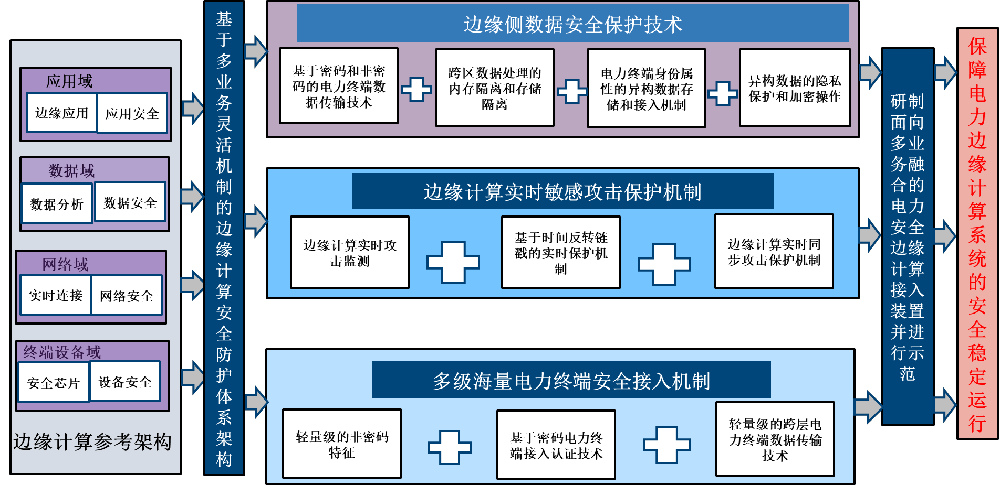

Tao Wu (吴涛)'s Homepage
产学研成果
● 理论价值：由于图对复杂系统内部或者对象之间关联关系的抽象表达能力，在各行各业形成了海量的图数据资源。
但以上数据中往往包含了大量个人、企业的敏感信息，存在隐私风险。同时，人工智能应用正在逐渐从封闭、专有的计算场景向开放、共享的场景转变。
传统智能算法普遍缺乏安全防护机制，当前开放环境下的智能系统面临严重的安全威胁。因此，聚焦“图数据隐私与模型安全”研究。
● 理论贡献：（1）图隐私保护 （2）图模型算法安全
 |
● 实践成果：图模型与知识计算应用
 图: 鲁棒可信的白鹤梁文博知识图谱构建效果 
图: 鲁棒可信的白鹤梁文博知识图谱构建效果 |
● 实践成果：电力系统边缘计算的安全防护

|